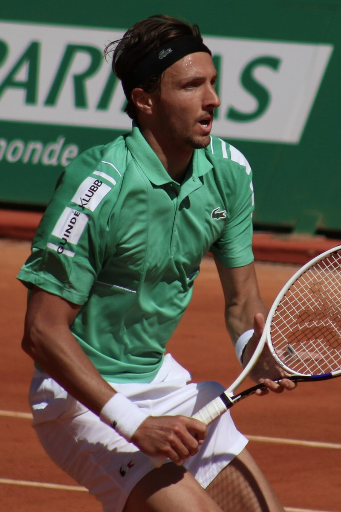
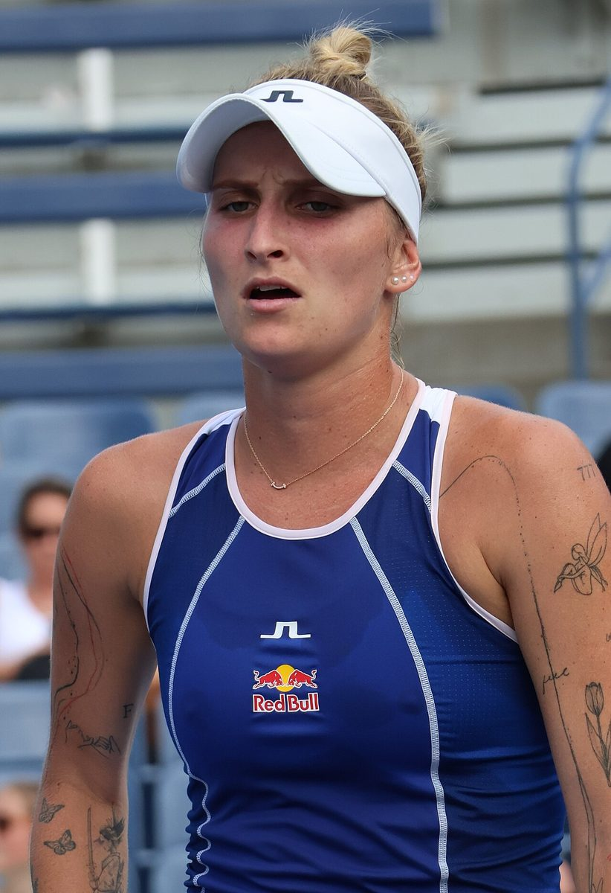
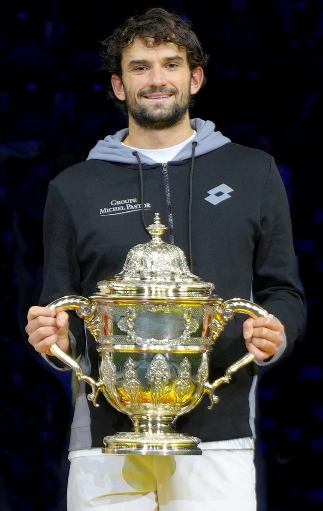

Артур Риндеркнеш опроверг обвинения ITIA в отказе от прохождения допинг-теста
57-я ракетка мира из Франции категорически не согласен с обвинениями и ожидает независимого трибунала без наложения временного отстранения.

В среду, 25 ноября 2026 года, Международное агентство по обеспечению честности в теннисе (ITIA) официально предъявило обвинения французскому теннисисту Артуру Риндеркнешу (Arthur Rinderknech) в предполагаемом отказе от сдачи допинг-пробы. 31-летний игрок, занимающий 57-ю строчку мирового рейтинга, отреагировал на это в соцсетях категорическим опровержением, заявив о намерении оспорить претензии перед независимым трибуналом.
Позиция Риндеркнеша и разбирательство в независимом трибунале
В заявлении, опубликованном на своей странице в Instagram, Риндеркнеш выразил разочарование тем, что конфиденциальное расследование утекло в СМИ. Теннисист подтвердил, что официально опротестовал обвинение ITIA и воспользовался правом на рассмотрение дела независимой арбитражной комиссией в начале 2027 года.

Француз подчеркнул, что никогда в жизни не принимал запрещенных веществ, и выразил уверенность, что предоставление полной картины произошедшего арбитрам приведет к его полному оправданию. Вслед за заявлением спортсмена последовал и официальный комментарий ITIA: организация подтвердила факт предъявления обвинений, подчеркнув стремление соблюдать конфиденциальность до завершения разбирательств и выразив сожаление по поводу преждевременной утечки данных в публичное поле.
По действующим правилам теннисной антидопинговой программы подозрение в отказе от теста не влечет за собой автоматического временного отстранения. Таким образом, Риндеркнеш сохраняет право выступать на турнирах ATP Tour до вынесения вердикта.
Суровость санкций и прецедент Вондроушовой
Согласно положениям Всемирного антидопингового кодекса, отказ от сдачи пробы или уклонение от тестирования без уважительной причины наказывается столь же сурово, как и положительная допинг-проба: базовый срок дисквалификации составляет четыре года запрета на участие во всех официальных соревнованиях.

Данная ситуация перекликается с делом чемпионки Уимблдона-2023 Маркеты Вондроушовой. В июне 2026 года чешская теннисистка получила четырехлетнюю дисквалификацию от ITIA за аналогичный отказ от допинг-контроля. В настоящее время Вондроушова обжалует это решение в Спортивном арбитражном суде (CAS) в Лозанне, вердикт пока не вынесен.
Результаты на корте и график выступлений
Наивысшим достижением Риндеркнеша в одиночном рейтинге была 24-я строчка, а в его активе значатся заметные успехи на крупнейших турнирах. В октябре 2025 года он дошел до финала турнира категории «Мастерс» в Шанхае, где его соперником стал двоюродный брат Валентен Вашеро (Valentin Vacherot).
На турнирах «Большого шлема» лучшим результатом Артура стал выход в четвертый круг US Open в Нью-Йорке в 2025 году. Кроме того, француз дважды добирался до третьего раунда Уимблдона — в 2025 и 2026 годах. Поскольку временное отстранение на него не наложено, Риндеркнеш вправе начать сезон 2027 года по расписанию и выступить на январских австралийских турнирах в преддверии слушаний трибунала.